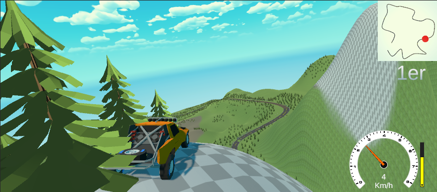

LioRally

LioRally is an advanced rally racing simulation game developed by a team of four dedicated students. To create the tracks, we utilized splines, which allowed us to design complex and realistic racecourses. The AI opponents in the game are programmed to adjust their speed based on their distance from the player, ensuring a competitive environment that remains challenging throughout the race. The game features a sophisticated physics engine that simulates real-life vehicle behavior, including functioning suspensions and tire friction. The friction of the wheels dynamically changes depending on the material of the road surface, enhancing the realism and immersion of the racing experience. The game was developed using the Unity engine (C#).
Game Presentation Video
Below is a video presentation of the LioRally game. It showcases the gameplay, features, and overall experience of the game. The video highlights key aspects, including the track design, AI behavior, and the realistic driving mechanics.